Monitorización, gestión e informes agronómicos en una sola plataforma.
Combinamos teledetección, clima, cartografía, cuaderno de campo y herramientas operativas para que explotaciones, bodegas y técnicos tomen mejores decisiones desde la parcela hasta el territorio.
La información de cada parcela, en escritorio y en campo.
Arcadia reúne cartografía, imágenes satelitales, zonificación, series temporales, clima y gestión de operaciones en una interfaz preparada para trabajar tanto desde oficina como desde móvil.
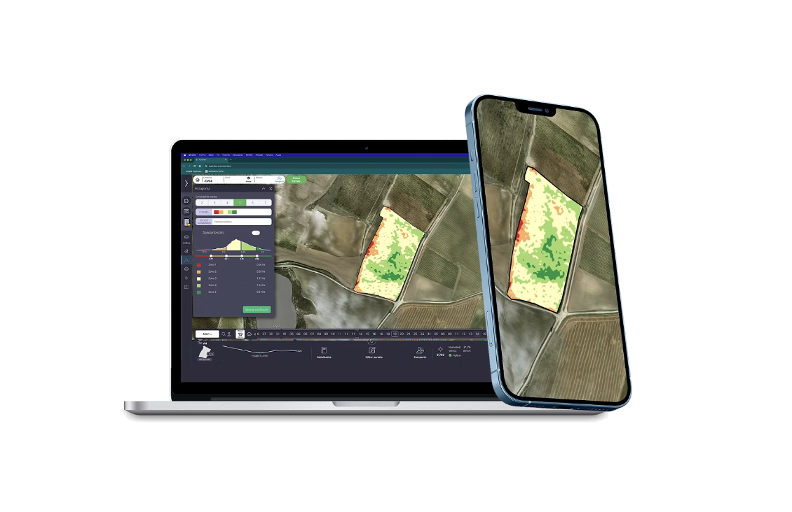
Herramientas concretas para una gestión integral.
No se trata solo de ver mapas. La plataforma integra monitorización, gestión agronómica, operación diaria e informes periódicos para un manejo más inteligente, sostenible y accionable.
Informes parcelarios semanales con mucho peso operativo.
Una de las piezas más importantes de nuestra propuesta son los Arcadia Reports: informes por parcela, actualizados semanalmente y enviados de forma recurrente para que el seguimiento no dependa de entrar cada día en la plataforma.
Cada informe convierte el dato técnico en una lectura clara y accionable: evolución del cultivo, cambios relevantes, interpretación parcelaria y seguimiento continuo campaña tras campaña.
Nacimos en el viñedo, pero pensamos en toda la operativa.
Nuestra trayectoria se ha construido en cultivos leñosos y especialmente en viticultura, trabajando con miles de parcelas y escenarios agronómicos reales. Por eso la tecnología está orientada a resolver problemas concretos, no solo a mostrar información.

Miembro de la Digital Catalonia Alliance.
Arcadia forma parte de la Digital Catalonia Alliance (DCA) y desarrolla su actividad dentro de un ecosistema conectado con entidades de referencia en observación de la Tierra, investigación y tecnología.
En conexión con organizaciones como ESA, IEEC, ICGC e i2CAT, reforzando nuestra capacidad para diseñar soluciones basadas en datos, teledetección y tecnología aplicada al territorio.
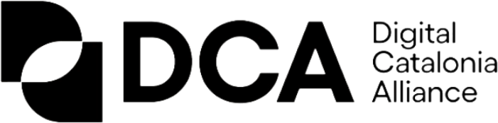
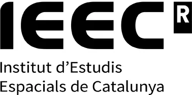
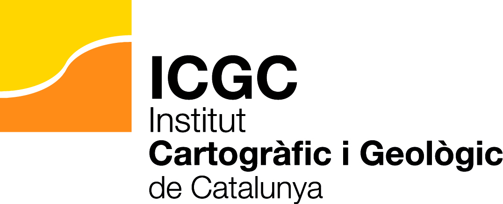
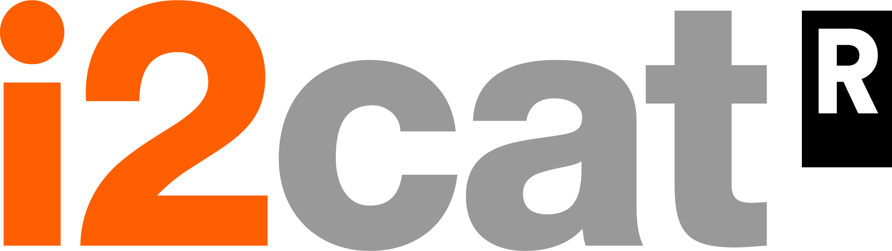
Ecosistema de colaboradores y partners.
Arcadia desarrolla sus proyectos dentro de un ecosistema formado por entidades, organizaciones y compañías de referencia en tecnología, territorio, investigación y sector agroforestal.
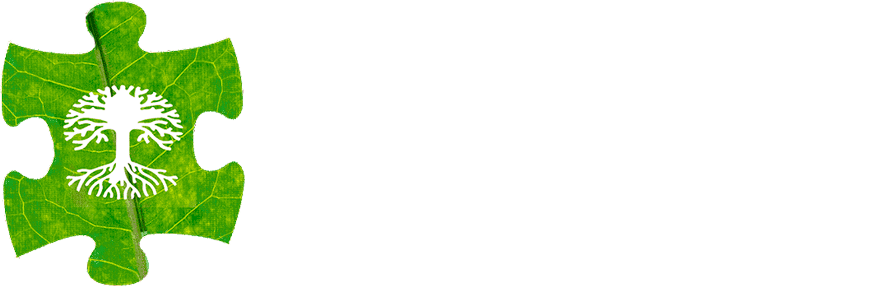
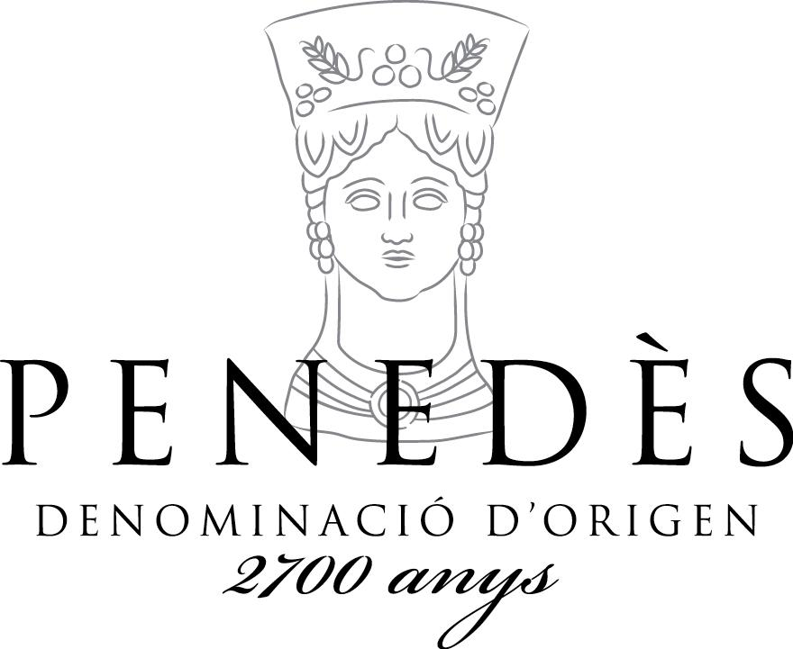
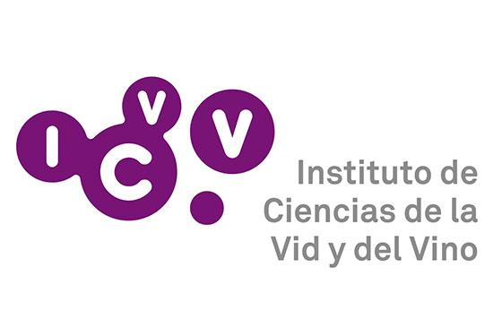
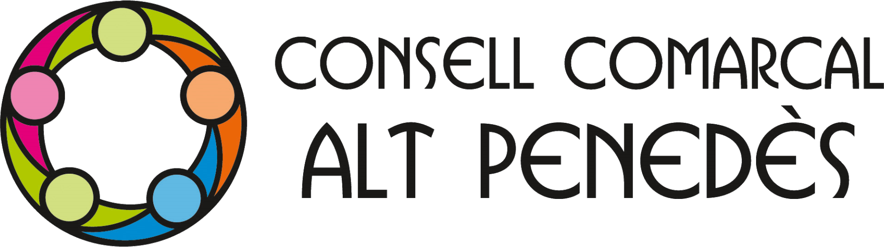
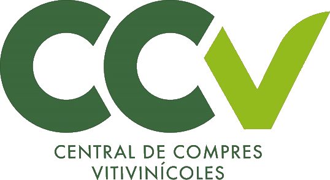
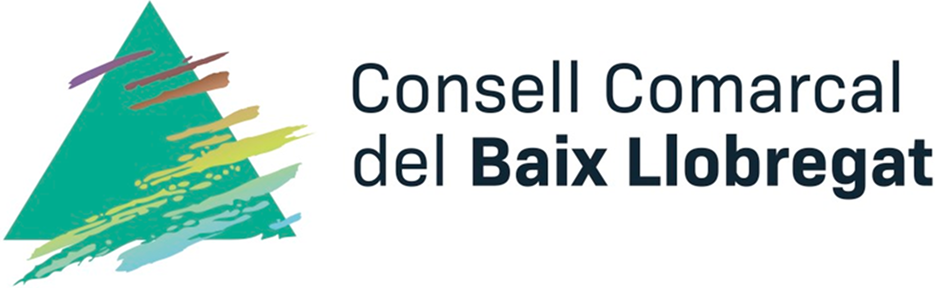
Selección representativa de entidades y compañías vinculadas al ecosistema profesional de Arcadia. La presencia de un logotipo no especifica la naturaleza de la relación existente.
Monitorizar mejor para intervenir mejor.
Podemos estudiar tu explotación, cooperativa, bodega o territorio y diseñar un modelo de seguimiento adaptado a tu operativa real.
Solicitar una demostración ↗